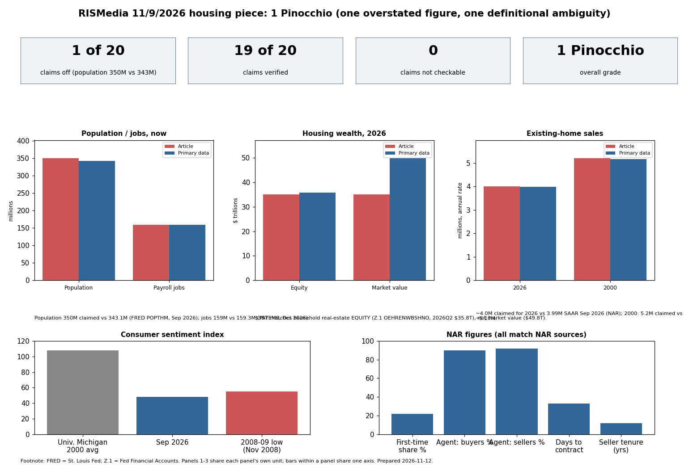

The piece faithfully relays NAR's Nov 2026 release and the 2026 Profile of Home Buyers and Sellers. Of 12 claim groups checked (about 20 individual figures), all were confirmed except population: 350M versus 343.1M in FRED POPTHM for Sep 2026 (about 2% high).
| Claim | Verdict | Evidence (Answer / Key values) | Sources |
|---|---|---|---|
| Population 281M (2000) to 350M | Partly wrong | FRED POPTHM: 281.1M Jan 2000; 343.1M Sep 2026. 350M overstates by ~2%. | FRED POPTHM |
| Payroll jobs 132M to 159M | Verified | PAYEMS: 131.0-131.9M early 2000; 159.3M Oct 2026. | FRED PAYEMS |
| Housing wealth $7T to $35T | Verified, definition unstated | Matches household real-estate equity: $7.1T (2000Q1), $35.8T (2026Q2). Market value is $11.6T to $49.8T. | FRED OEHRENWBSHNO, HOOREVLMHMV (Fed Z.1) |
| Existing sales ~4M vs 5.2M in 2000 | Verified | 3.99M SAAR Sep 2026; FRED EXHOSLUSM495S 2026 monthly 3.93-4.19M. 2000 ~5.2M per NAR. | NAR, FRED |
| Months' supply highest since 2015 | Verified (medium) | NAR Sep 2026: 4.8 months, up from 4.5 a year earlier; secondary coverage says highest since Nov 2015; NAR release itself has no such sentence. | NAR Sep 2026 release; Inman |
| 33 days listing to contract, Sept | Verified | NAR: 33 days, 31 in Aug, 33 in Sep 2025. | NAR |
| Sentiment about half 2000 level, worse than Great Recession | Verified | UMich 48.1 (Sep 2026) vs 107.6 avg-ish 2000 (45%); Nov 2008 low 55.3. | FRED UMCSENT |
| Yun quotes (affordability, longer on market, buyers reject, boost confidence) | Verified as attributed | Match NAR press release wording. | NAR release 2026-11 |
| First-time buyers 22%, near historic low; median age 40 record | Verified | NAR 2026 Profile: 22%, up from record-low 21%; age 40 equals record. | NAR Profile |
| Sellers median 12 years, longest on record | Verified | NAR Profile. | NAR |
| 90% buyers used agent, 92% sellers record; highest in four decades | Verified | NAR Profile. | NAR |
| Lautz: rent, student debt, childcare | Verified (childcare via NAR takeaways) | Profile release cites rent, student debt; childcare in NAR top-10 takeaways page. | NAR |
Confidence: high for FRED and NAR-matched figures; medium for months' supply.